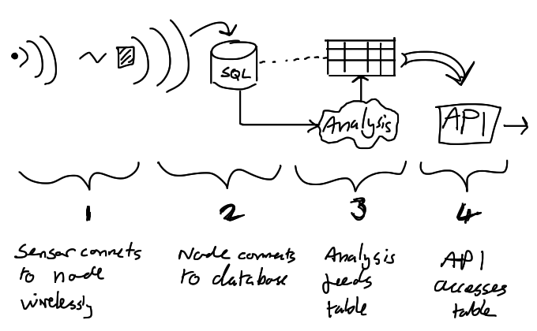
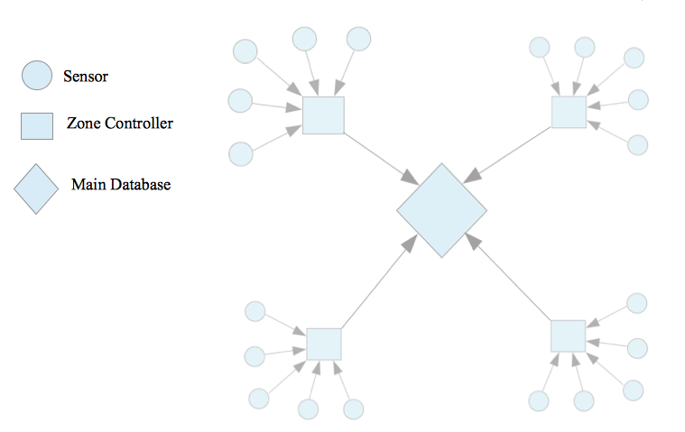
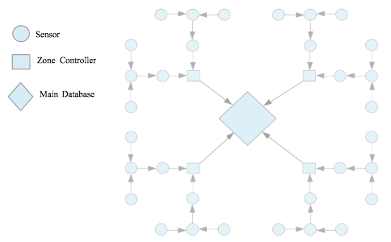
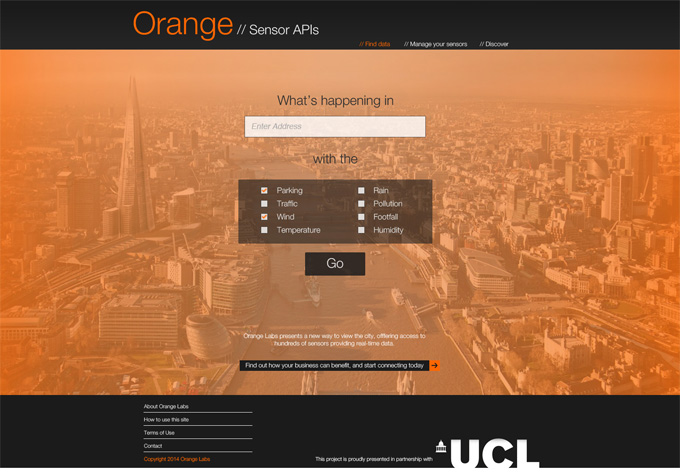
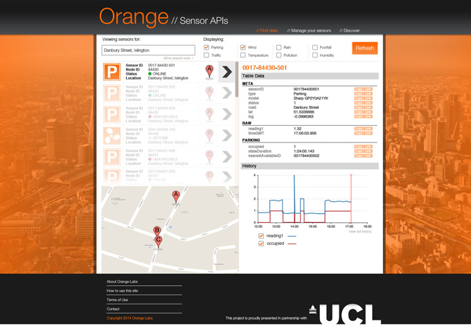
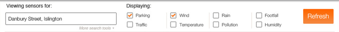
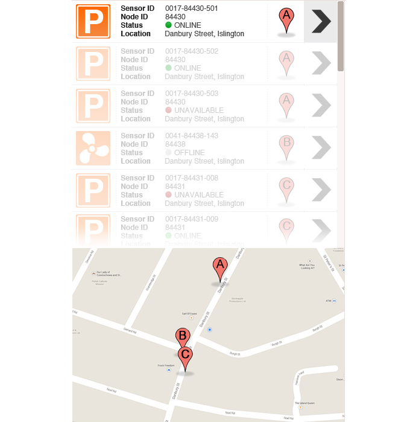
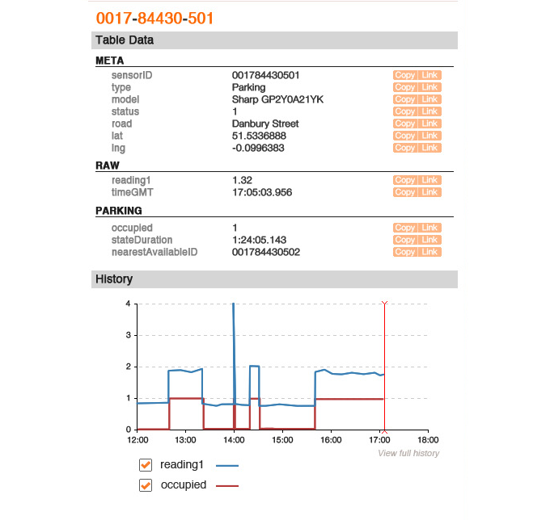

Our system design has been formed based off of the extensive research we carried out, and consists of multiple components all working together, often with subsystems within them. The design for the prototype can be found on the Implementation page. The design can be summarised thus:

1. Reading raw data

A sensor will necessarily need to communicate wirelessly with a node before its data can be sent to the SQL database. This decision was based on the idea that fitting a wifi module to every sensor would cause the sensors, which are supposed to be kept low-profile and consume a minimal amount of energy in order to extend working life, to consume a vast amount of power. Therefore, it was decided that the sensors would instead communicate via Bluetooth with a node with wifi capability. Details for this can be found in the section below.
2. Database Upload
Once the data is retrieved from the sensor and read by the node, the node must upload the data to the central server's database. There are a number of methods for doing this, but as agreed with our client we decided that we would be writing in Java, as it was familiar to us, offers a wide range of libraries, and can be used to prototype with a Raspberry Pi.
The SQL database will be hosted through Windows Azure for the protototype for convenience (see Implementation), but will ideally be hosted on Orange cloud service in the final version. Connection will be established to the database in the Java code, running through the Raspberry Pi (the node) and the readings are to be sent as queries to update the relevant rows in the table.
3. Analysing the raw data and presenting it to the database
Once in the database, the raw data should be analysed in order to determine the application-level state (i.e. translate what could simply be a float reading into a meaningful result, like indicating that a parking space is occupied). This will be completed by making use of a self-written API for accessing the database and processing the raw values in a virtual machine running analytical algorithms. This analysed data will be fed back to an application-specific table (such as a "Parking" table for parking sensors), offering relevant information (e.g. "spaceOccupied").
4. Building an API for external web access
A web-based API (for instance written in JSON) will allow external access to the now-populated database, so that developers, researchers, or maintenance admins might build applications which monitor and use the data.
Regarding API
Overview
To create our final system, there are a few design features we should consider.
The way we choose to lay out our devices and the way we plan to connect them is going to be vital in optimising our final product
Sensor Network Layout
There are many different ways in which we could connect our devices together.
Our initial idea was to pair each sensor directly to the user's phone.
This would be an incredibly simple system, however it would only allow you to access information about sensors very close to you.
In the use case of parking monitoring, this would not be enough as it would only tell you what you already know.
If you are close enough to connect to the parking bay, you are close enough to see with your own eyes if its empty or not.
It is therefore vital that we upload this data in some way, which introduces the second idea we had.
This idea involves setting up multiple sensors in one area and one 'zone controller'.
The sensors would be responsible for gathering data and sending it off with either Bluetooth or ZigBee to the zone controller.
The zone controller is then responsible for storing this data temporarily and then uploading it to a master database where all the sensors in the entire system is stored.
The general idea looks like this:

As seen here, every sensor is connected directly to the zone controller in its local area.
This is definitely not the most efficient way to do this, as in most use cases, the sensors are so far spread apart that only a couple of sensors might be in range to connect to the zone controller.
This would increase the amount of zone controllers needed making the system very inefficient.
To optimize the system, we can make use of the fact that we are not using all the upload speed to connect a sensor to the zone controller.
This means that are able to send more information from one sensor than it is able to produce on its own. What this allows us to do is use sensors as intermediate steps to get to the zone controller.
the configuration for this can be seen below:

As seen here, we are able to incorporate many more sensors to our network than previously. In this example, the sensor closest to the zone controller will send its own data along with the data from the 3 sensors further down the tree.
This means it is sending 4 times the amount of data compared to the first configuration. Since we are literally sending bytes of information at a time from each node, this will not be a problem.
The system we've been tasked with has no graphical user-interface in its specification, but a web-based user-interface for developers would be of great use. Thus, we have developed our own requirements for a UI, and designed some prospective pages for demonstration purposes. It is a real possibility that a similar UI will be implemented in term 2.
Requirements
The UI must:
- Offer a search function to browse the sensor database
- Allow for filtering results depending on a range of criteria
- Provide all data held for each sensor
- Provide API shortcuts for each sensor data point
Should:
- Display the data in an easy-to-use and intuitive way
- Offer the capability for holders to sign-in and view the status of their own sensors on the network, and add or remove sensors
- Promote the network system and describe its applications
Could:
- Display additional data analysis visually (graphically)
- Use integration with google maps for enhanced visibility
Would like:
- Accurate sensor positioning – to the nearest metre – demonstrating its position in the street
Context of use

The users of this site would primarily be companies or developers who would benefit from using the sensor network, in some way. That may be by hosting their own sensors on the network to expand the data available, using the data to improve products and services, or using the API to develop new applications. The website should strive to show the data in a clear and distinct way. It should also encourage use of the API by simplifying the process of using it.
The site will primarily be for viewing the data manually, but will also offer capabilities for monitoring the system, adding sensors, removing sensors, and other administration tasks like updating metadata.
Design Mockups
Landing Page

This homepage offers an inviting and wildly simplified experience in order to enhance the intuitive, inviting interface. The default screen immediately proposes that the user explores the network, in order to demonstrate what's available and what's achievable. The large, centralised interface matches standard conventions (a search bar with check boxes to filter results) in order to be easy to use, and the page is kept free from clutter to avoid confusing the user or overwhelming them with content. The background image subtly sets the context.
After first glance, the user will then notice the additional detail – links available in the footer for additional information, and in the header for accessing more specific parts of the site. A short, innocuous description of the system gives context, and a link invites businesses to learn more about how the system can benefit them (attracting a greater user base).
A heuristic evaluation using Nielson's principles is as follows:
| Issue |
Heuristic(s) |
F |
I |
P |
S |
| Initial ambiguity regarding purpose of the search tool |
Help + Documentation |
1 |
1 |
0 |
1 |
| Criteria for filtering the search do not convey much information regarding what exactly the return |
Help + Documentation, Match to Real World |
1 |
2 |
1 |
1 |
| Links at the top of the page are non-descript |
Flexibility and efficiency of use, Help + documentation |
2 |
1 |
1 |
1 |
Results Page

This is an example of the page that would be loaded as a result of searching 'Danbury Street' with the Parking and Wind criteria selected. It consists of three main panels:

Search Panel
This panel is initialised to show the same criteria the search was sent with, but allows user input to update their search filters and click 'Refresh' in order to re-run the search under the new conditions. It uses exactly the same interface as was seen on the home page – a search bar with the same 8 criteria check boxes – maintaining consistency and helping users to recognise how to use the system. If they are comfortable with a more advanced search, a small 'More search tools' button is provided in order to expand the search panel and provide an expanded set of filter settings, in line with Nielson's 'Flexibility and Efficiency of Use' heuristic. These additional filter settings were not included in the mockup, but may allow for users to search by status, nodeID, model, and more.

Result List
This panel lists the results at the top – each individual sensor would appear once in this list – with a contextual Google Maps map embedded at the bottom. The tiles in the result list are structured as follows:
This design style will be consistent for all results, with the graphical icons allowing for easy interpretation, quickly becoming memorable to the user. The list cards hold only the most relevant data, in order to avoid becoming too cluttered and taking up too much space. With the integration of the Maps map, it's possible to visualise node locations, and the corresponding cards display an icon indicating which node they belong to. This is all designed to aid the user in finding the precise sensor they're seeking as quickly as possible. All sensors in the list which are not currently being viewed are greyed out, and the right-arrow (indicating that the data panel is displaying that sensor's data) is highlighted grey on the selected sensor.

Data Panel
Finally, the data panel displays all readings and metadata stored in the database for that sensorID. This is listed by table, with each field listed in order. The data have two links available to the right in each row – Copy and Link, which act as shortcuts to using the JSON API. Clicking these links will copy the direct code string into the user's clipboard so that they can easily integrate it with their projects.
Below the Table Data section is a section called History, offering a graph of readings over time. The data to be drawn on the graph is selectable through checkboxes. This is mainly for users to browse directly, and doesn't offer low-level implementation, though the option to 'view full history' is provided if they wish to see more quantitative data.
A heuristic evaluation using Nielson's principles is as follows:
| Issue |
Heuristic(s) |
F |
I |
P |
S |
| Overwhelming interface when unfamiliar |
Aesthetic and minimalist design |
2 |
2 |
1 |
2 |
| Information provided on result cards is technical and low-level |
Help + Documentation, Match to Real World |
3 |
2 |
2 |
2 |
| Page bears very little resemblance to previous page |
Recognition rather than recall |
1 |
2 |
1 |
1 |
| Initially unclear that the data panel relates to the result card |
Aesthetic and minimalist design, Consistency and Standards |
1 |
2 |
1 |
1 |
| Use of 'Copy | Link' buttons is not described |
Match between system and the real world, flexibility and efficiency of use, help + documentation |
2 |
1 |
2 |
2 |
| Workings of the system are not explained; user has to learn what nodes are and how it's structured |
Match between system and the real world, flexibility and efficiency of use |
3 |
2 |
1 |
2 |
Summary
Those users the website was tested on reported that it had an intuitive and easy-to-understand layout, but most struggled with understanding the data and what it related to. It's important to note that this system is designed for developers and those who are using the system - regular users would understand all the necessary information when using it. Upon having the system explained, all testers very quickly picked it up, and were able to recall how to find information like the node ID, or which node a given sensor belongs to.
Overall the design appears to be fairly successful, though the layout and use of screen space certainly needs some attention. Not a lot can be done about the technical information, since that is simply what the system is intended to provide; high-level representations of the data are left to the developers to create within their own apps.